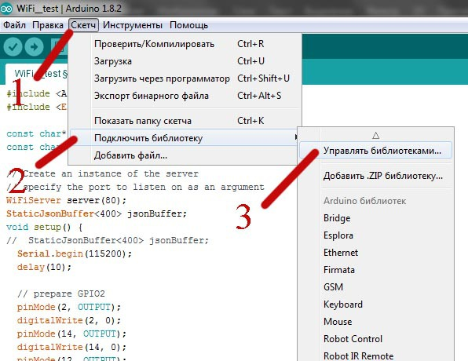

Установка и подключение библиотек Arduino
Стандартные библиотеки Arduino хранятся в папке:
«C:\Program Files (x86)\Arduino\libraries\»
Дополнительные библиотеки устанавливаются в папку:
«C:\Users\*Имя Пользователя*\Documents\Arduino\libraries»
В вашем случае эти пути могут быть другими из-за другой буквы основного жесткого диска и другого имени пользователя. Если у вас установлена 32х битная операционная система то папка «Program Files (x86)» будет называться «Program Files».
Установка библиотек Arduino
Установить библиотеки в Arduino IDE очень просто. Можно сделать это двумя способами. Через интерфейс программы или копированием скачанной библиотеки в папку «libraries». Рассмотрим подробнее оба варианта:
Установка библиотек через Arduino IDE
Первый вариант — это установка библиотек Ардуино из официального репозитория. Для этого необходимо запустить Arduino IDE, в верхнем меню выбрать «Скетч -> Подключить библиотеку -> Управлять библиотеками».

Установка библиотек ардуино
После этого откроется окно со списком доступных библиотек. Для того что бы найти нужную библиотеку можно воспользоваться поиском или выбрать необходимый раздел. Для установки библиотеки необходимо выбрать ее из списка, нажав на название, и кликнуть по появившейся кнопке «Установить».
Установить библиотеки Arduino
Второй вариант — это установка библиотеки из скачанной .zip папки. Через интерфейс Arduino IDE это можно сделать всего за пару кликов. В верхнем меню программ выбираем «Скетч -> Подключить библиотеку -> Добавить .ZIP библиотеку». Откроется окно файлового менеджера, где необходимо выбрать папку или .zip архив с вашей библиотекой.
Еще один способ установки библиотек Ардуино
Вы можете просто перенести папки библиотек по пути:
«C:\Program Files (x86)\Arduino\libraries\»
После того как вы добавили свои библиотеки необходимо перезапустить Arduino IDE. Теперь вы можете использовать сторонние библиотеки в своих проектах.
Подключение библиотеки Arduino
Мало установить библиотеку. Для использования ее необходимо подключить в скетч. Сделать это очень просто. Можно в начале скетча вручную написать подобную строчку:
#include
<ESP8266WiFi.h>
Обратите внимание, что после этой инструкции не ставится точка с запятой. Так же можно подключить библиотеку ардуино через меню программы Arduino IDE. «Скетч -> Подключить библиотеку -> Название необходимой библиотеки». После этого в начало вашего скетча автоматически добавится нужная строчка. Теперь вы можете использовать библиотеки Arduino в своих проектах.